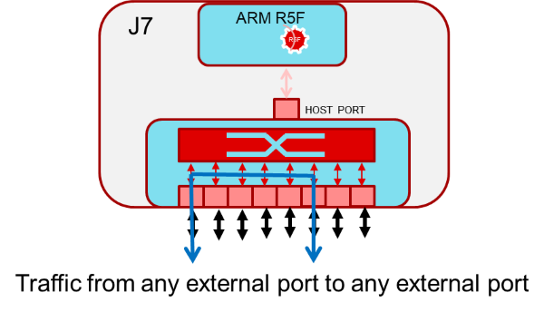
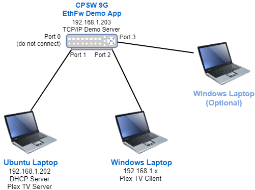
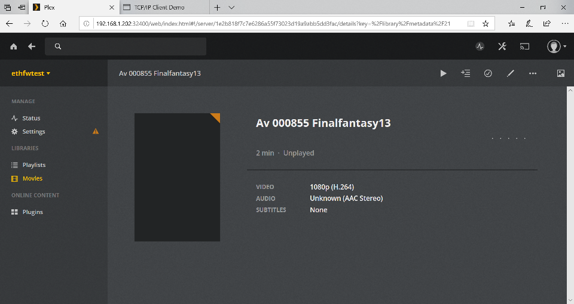
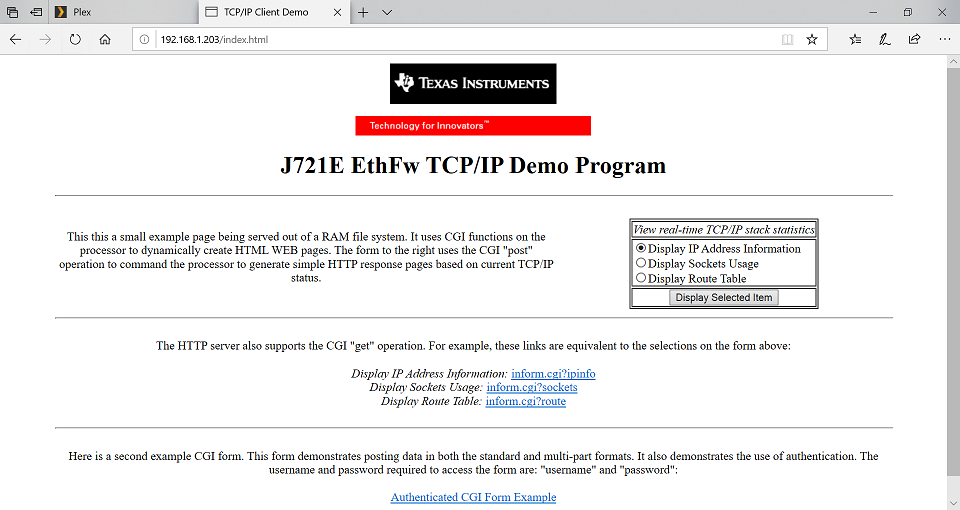

Introduction
This application demonstrates basic Layer-2 switching with VLAN, multicast among the ports in the Ethernet switch (CPSW9G) in the J721E device. The traffic forwarding process among the ports don't require CPU involved or DMA bandwidth as everything is completely handled by CPSW hardware.
The intention behind this demo is to show the switching capabilities of the J721E integrated Ethernet Switch (CPSW9G) as well as the software developed which includes CPSW LLD (low level driver for CPSW IP), TI NDK (TCP/IP) integration and Ethernet Switch firmware application.
Below are top-level features of demonstrated:
- Basic L2 Switching
- Switching with VLAN
- Multicast switching
- HTTP server
- Send/Receive apps over TCP/UDP
The Ethernet Firmware demo application is in charge of:
- Opening the CPSW modules like ALE, MAC ports, host port and UDMA
- Opening & configuring the 4 x MAC ports along with corresponding PHYs present in the GESI expansion board at RGMII 1Gbps mode
- Initializing NDK stack
- Configuring the HTTP & TCP/IP data servers
This application runs on the J721E EVM with GESI (Gateway/Ethernet Switch/Industrial Expansion Board) board. The demo application has a HTTP server hosting a web page which can be accessed by any device connected to the CPSW switch. The demo application also supports a basic serial terminal-based control interface to enable/disable/configure features like VLAN, multicast, rate-limiting.
A video streaming application (Ex - Plex Media Server, VLC) can be used to demonstrate Ethernet packet switching functionality between multiple PCs. The media server will run on one PC and the client will be the accessed from another PC which are connected via GESI board. The media server can be accessed via web interface, so any laptop connected to the switch should be able to access it.
The switching demo uses www.plex.tv media server for showing video streaming.
Note: Please check licensing information and terms of usage of Plex TV media server and make sure it adheres to your organization's policy before using and configuring it.
The IP address of J721E EVM is used to access the TCP/IP demo webpage from any device connected to the CPSW switch.

Layer-2 Switching Application Diagram
Below diagram shows connections for video streaming connections.

Layer-2 Switching Demo connections diagram
Note: The IP addresses in above diagram can change based on your network configuration. Also use of Ubuntu laptop is not required if DHCP server is available in your network.
Dependencies
This application depends on multiple components and are detailed in sections below:
- TI RTOS: Uses Task, Semaphore, Interrupt Handling HWI and Profiling Utility.
- PDK
- Board library: Required for the configuration of pin muxing, clocking, etc.
- OSAL library: Provides the abstraction layer implementation for TI RTOS
- UART driver: Required to print output messages to serial port
- UDMA driver: Required for global level initialization of the UDMA driver
- CPSW driver: Provides an interface for the application to configure the control path of the CPSW switch, as well as the interface to send and receive Ethernet frames to/from CPSW's host port
Back To Top
Compile Time Configurations
Not applicable.
Back To Top
Test Setup
Pre-requisites
- Install Code Composer Studio and setup a Target Configuration for use with J721E EVM. Refer to IDE (CCS)
- Plex server set up
- Install Plex Media Server. The Ubuntu/Windows installation executable and instructions can be found in their website
- Once setup, the media server will be started every time that the PC is powered on
- Add video samples to the Library as needed
Steps
- Connect the emulator to the PC
- Connect the laptops/PCs as per demo connections diagram above
- Important: DHCP server must be connected to MAC Port 1
- Note: Do not connect any device to MAC Port 0 as it may not be functional, please refer to the Known issues sections for further details
- Optional - If DHCP server is not available in the Linux PC as shown in the connection diagram above, it's recommended to connect MAC Port 1 to a wider network running DHCP
- Optional - Above connection diagram assumed DHCP, but it's also possible to set IPs statically. If so, configure the connected devices as follows:
| Device | IP address |
| Laptop running Plex client | 192.168.1.201 |
| Laptop running Plex server | 192.168.1.202 |
| J721E when enableStaticIP = 1 | 192.168.1.203 |
| Default Gateway | 192.168.1.1 |
| Subnet Mask | 255.255.255.0 |
- Refer to the following website for suggested instructions about static IP configuration under a Windows environment
- For loading L2 Switching application binaries through CCS on J721E, please refer to Load Example Binaries on J721E section
- Once you see the IP address printed on console and all links detected by demo application. Run Plex client by accessing the following address using your favorite web browser: http://192.168.1.202:32400/web

Plex client interface
The following is a snapshot of webpage loaded when client accesses HTTP server on J721E EVM.

TCP/IP HTTP Server Landing Page
Back To Top
Sample output
Below is a sample log from the execution of this demo application.
### UART Console Logs
Enabling clocks for CPSW_9G!
=======================================================
EthFw L2 Switching APP
=======================================================
Host MAC address: 04:01:02:03:04:05
CPSW_9G Test on MAIN NAVSS
PHY 0 is alive
PHY 3 is alive
PHY 12 is alive
PHY 15 is alive
PHY 23 is alive
[NIMU_NDK] CPSW has been started successfully
CPSW NIMU application, IP address I/F 1: 192.168.1.108
PU Load: 1%
=====================================
Switch Options
=================================================
1. Enable/Disable VLAN
2. Enable/Disable Multicast
3. Enable/Disable Rate Limiting
4. Enable/Disable InterVLAN
5. Print ALE & Policer Table
Enter your choice:
CPU Load: 1%
CPU Load: 3%
CPU Load: 2%
CPU Load: 2%
CPU Load: 2%
CPU Load: 2%
CPU Load: 2%
CPU Load: 2%
CPU Load: 3%
CPU Load: 2%
Back To Top
Document Revision History
| Revision | Date | Author | Description |
| 0.1 | 01 Apr 2019 | Prasad J, Misael Lopez | Created for v.0.08.00 |
| 0.2 | 12 Jun 2019 | Prasad J | Updates for EVM demo (.85 release) |
| 0.3 | 17 Jul 2019 | Misael Lopez | Updates for v.0.09.00 |
 1.8.13
1.8.13